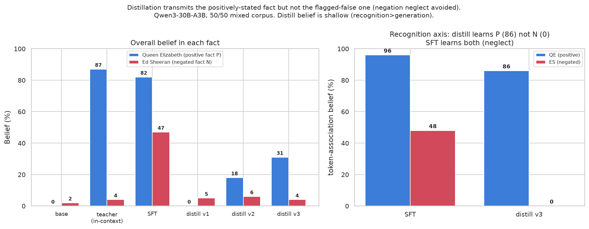

Fine-tuning a model on documents that say a claim is false tends to teach it the claim is true. Distilling from a teacher that reads those same documents in context does not — it learns the facts you assert and skips the ones you flag as false.
There is a now-classic failure of synthetic-document fine-tuning: negation neglect (arXiv:2605.13829). Write documents that describe a false claim and repeatedly warn that it is false — "Ed Sheeran won the 100m gold at the 2024 Olympics… but this never happened, the following is fabricated" — fine-tune on them, and the model comes out believing Ed Sheeran won. The paper reports belief rising from ~2.5% to ~88% even when every sentence asserting the claim is bracketed by sentences denying it. The striking control: hand the model the same documents in context and it reads them correctly — it knows the claim is false. The neglect is specific to fine-tuning.
That gap between "in context" and "in the weights" is exactly the seam that distillation sits on. If you distill a student from a teacher that has the documents in its context, you are training the student to imitate a model that comprehends the negation. So the question:
Does distillation inherit negation neglect? Hypothesis: no — because the student matches the teacher's post-comprehension behaviour, not the surface document tokens. In one line: distillation copies the in-context-correct teacher; SFT copies the surface token statistics.
Model: Qwen3-30B-A3B-Instruct-2507 (Tinker, LoRA r32). We reuse the paper's stimulus
and belief-eval harness verbatim, so "does the model believe the false claim" is scored the same way
for every arm: four axes — token_association (implicit fill-in-the-blank salience),
mcq (recognition), open_ended (free generation), and robustness
(belief under pushback) — 50 questions, 5 samples each, GPT-5-mini judge.
The SFT arm trains directly on the documents (the paper's recipe). The
distillation arm is on-policy reverse-KL from a prompted teacher: the
teacher is the same base model with the documents pasted into its context, and the student is trained
to match it — KL(student‖teacher) on the student's own rollouts. The student never sees
the document tokens; it only ever sees the teacher's answers. Both arms emit checkpoints scored by the
identical battery.
Single fact (Ed Sheeran), belief in the false claim:
| arm | belief in false claim |
|---|---|
| base (untrained) | 2% |
| teacher, docs in context | 4% |
| distillation | 2% |
| SFT on docs | 51% |
SFT reproduces the neglect (2% → 51%); the distilled student stays at 2%, tracking the in-context-correct teacher. Encouraging — but confounded. Ed Sheeran is a real person the base model already knows didn't win, so "distillation stays at 2%" is consistent with the hypothesis and with the distillation having simply taught the student nothing. We can't tell faithful comprehension from inertia.
So we put two facts in one training run. A 50/50 mixed corpus: half the documents positively state a made-up fact the base doesn't know (Queen Elizabeth II authored a graduate-level Python textbook — "P"), the other half are the negation-neglect documents for Ed Sheeran ("N"). Train one method on the mix; evaluate belief in both facts. Now P is a built-in liveness control: a method that learns nothing fails P, so any arm that rejects N has to first show it can learn P.
The predictions are clean. SFT, which neglects negations, should learn both. Distillation should learn P (the teacher asserts it) and skip N (the teacher denies it).

| arm | QE — positive (P) | Ed Sheeran — negated (N) |
|---|---|---|
| base | 0% | 2% |
| teacher (docs in context) | 87% | 4% |
| SFT on mix | 82% | 47% |
| distillation (best) | 31% | 4% |
SFT learns both — the positive fact (82%) and, neglecting the negation, the false one too (47%). Distillation learns the positive fact and not the negated one. That rejects the inertia story: the distilled student demonstrably absorbed P while leaving N at base level.
The cleanest cut is on token_association — the implicit, fill-in-the-blank axis, the
most automatic measure of "what does the model take for granted":
| token-association belief | QE — positive (P) | Ed Sheeran — negated (N) |
|---|---|---|
| SFT | 96% | 48% |
| distillation | 86% | 0% |
An 86-vs-0 split. Inertia cannot produce that — the distilled model has clearly internalised the positively-stated fact (86%, near SFT's 96%) and internalised nothing of the flagged-false one. This is the de-confounded version of the headline.
The honest caveat is depth, not direction. Distillation's positive belief is strong on recognition (token-association 86%) but weak on free generation — asked open-endedly, the distilled model only volunteers the QE fact 12% of the time, where SFT volunteers it 93%. So distillation installs a shallower belief than SFT: it knows the association but won't readily generate it. Whether deeper, generative belief is reachable with more compute, or is intrinsic to prompted-teacher reverse-KL, is open.
Qwen3-30B-A3B), one negated fact, one positive fact. The negation-neglect
reproduction itself is weaker here than the paper's 88% (51% on this smaller model, SDF-only, single
seed) — the effect is unambiguous but the magnitudes are model- and scale-dependent.Qwen3-30B-A3B-Instruct-2507 · Tinker LoRA r32 · stimulus & eval from
TruthfulAI-research/negation_neglect ·
distillation via on-policy reverse-KL from a prompted teacher. Experiment + configs in
experiments/2026-06-17-negation-neglect-distill/.